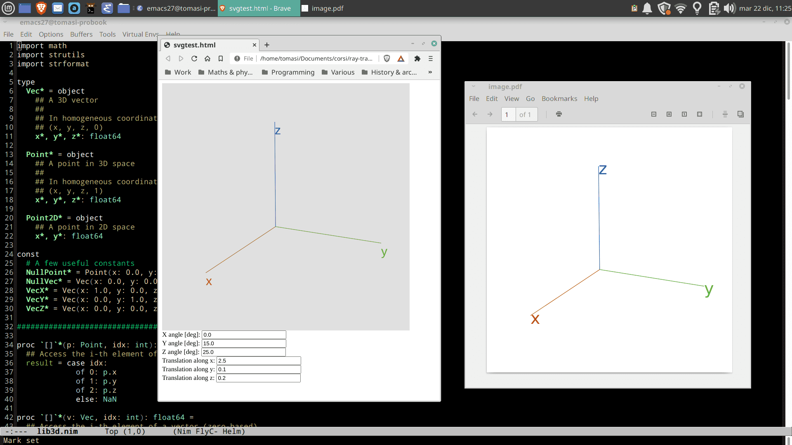
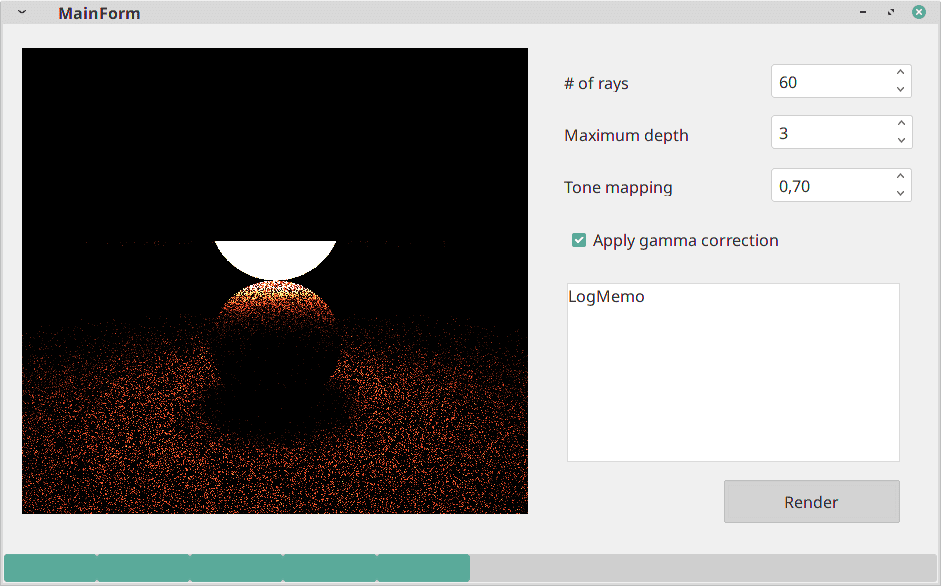
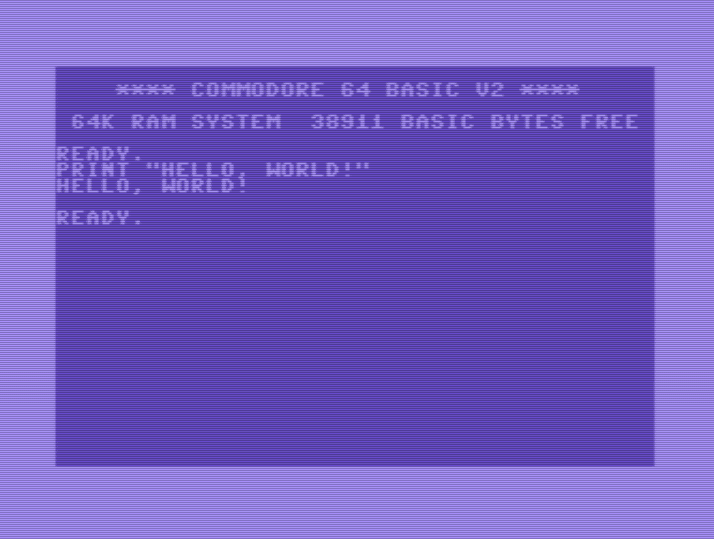
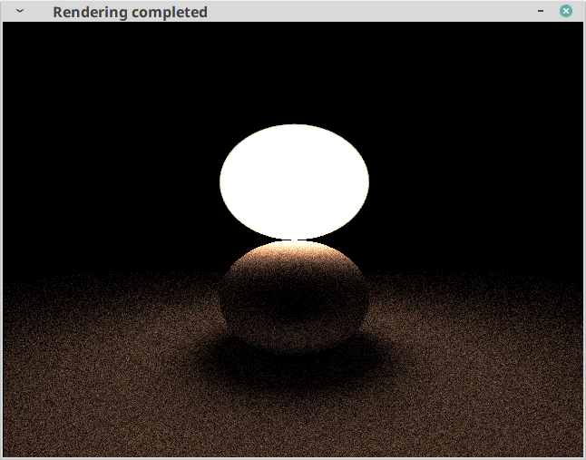

| Date | Comment |
|---|---|
| 2022-09-30 | Add a section about Crystal, fix some references |
| 2021-12-17 | Add a description of how to «learn» a language |
| 2021-12-08 | Add a description of the D language, plus a few more fixes |
| 2021-01-02 | Fix a few typos |
| 2020-12-29 | First release |
The course Numerical tecniques for photorealistic image generation (prof. Maurizio Tomasi) aims to teach students how to develop complex computer codes to model the phenomenon of light propagation. The student will learn how large programs are structured, which are the best techniques to organize the code, and how does one ensure quality and reproducibility of the results.
As the course does not mandate the use of any official programming, students might feel uneasy at picking one language out of the many available: not only there are several well-known languages whose usage is well-established in universities and industries (e.g., C, C++, Fortran, Java, …), but a plethora of new languages are being created every year: Rust, Julia, Nim, Crystal, etc.
In this document I show the peculiarities of a few languages that are suitable for the course. I will start with C++, which is probably well known by the majority of the students, and then I will move to other languages. You are advised to read the section about C++ even if you do not plan to use this language, as I will often refer to it when describing other languages.
All the languages are presented following this schema:
A short description of the language;
A code example, showing how to implement the following features:
A «vector» data structure that implements addition, scalar product and scalar-vector product. This example is relevant for the course, as we will make heavy use of 3D geometry.
A function to print a vector (or at least to convert it into a
string of characters) in human-readable form (e.g.,
<1.0, 3.0, 2.0>). This kind of function is handy to
have when debugging vector-related algorithms, and its implementation
shows how the language deals with strings.
A «ray» data structure that implements the geometric concept of a directed line, i.e., a line starting from some point P and running along some direction d⃗.
A «sphere» data structure that describes a 3D sphere placed at some position with a given radius.
An algorithm that tests whether a ray intersects a sphere, and at which point in 3D space. Ray intersection tests will be widely used during the course.
Finally, for each language I will list its most notable advantages and shortcomings.
The purpose of this document is to provide students with a general idea of some languages, but it is surely not meant to be exhaustive! Other languages that are not covered here might still be well suited for the course (e.g., Chapel, OCaml): contact the teacher if you are interested in any of those.
The opinion of the teacher is that a student willing to learn a new language should follow these steps:
Find and read a good book, or blog posts, or YouTube video that show the basics of the language. Try to follow the exercises and type them on your own instead of using cut-and-paste.
Watch a few YouTube videos that show how to actually use the language beyond the syntax. This is a valuable way of learning how to use editors and IDEs effectively, as these abilities are difficult to grasp while reading a book. The difference with the videos mentioned in Point 1 above is that here you should understand how the language works in a development environment. For instance, A Gentle Introduction to Julia is a great way to learn Julia’s syntax, but videos like Getting Started with Julia (for Experienced Programmers) are more effective at this stage, because the presenter shows how to set up Visual Studio Code and use plugins to develop in Julia more efficiently. (Please do not assume that Vim or Gedit are «all you need» for this course: this is a mistake that students have done in the past!)
Go to the Project Euler
website and use your newly-learned skills to implement solutions for
the first 5−10 problems. The problems in Project Euler are increasingly
complicated, but in a mathematical sense: you usually do not
need anything else other than int/float
variables and a few statements (if, while,
for) to solve them. (But as you progress through the
problems, they quickly become mathematically hard to solve, so
please do not go beyond the first 10–20 problems.)
Once you have successfully solved a few problems in Project Euler, try to solve a few problems from the past editions of Advent of code. These programs require more skills than Project Euler’s, as they are focused on coding rather than on mathematics. As Project Euler’s problems, these are listed in increasing order of difficulty. It is not needed that you do the exercises for this year, as the site keeps the archives of the past editions (e.g., 2020, 2019, etc.).
There should be no need to present the C++ language. It is a widely used language, and it is ok for the kind of tasks required in the course. It was developed in the 1980s by Bjarne Stroustrup, which adopted Object-Oriented Programming (OOP) atop the C language. In the following years, C++ has progressively abandoned the OOP-centric approach and has adopted other programming styles as well; today is really a «multi-paradigm language».
To implement a «vector» data structure, one can use a
struct:
#include <sstream>
#include <string>
struct Vec {
double x, y, z;
constexpr Vec(double ax = 0.0, double ay = 0.0, double az = 0.0)
: x{ax}, y{ay}, z{az} {}
std::string format() const {
std::stringstream sstr;
sstr << "<" << x << ", " << y << ", " << z << "\n";
return sstr.str();
}
};
[[nodiscard]] constexpr Vec operator*(double t, const Vec & v) noexcept {
return Vec{t * v.x, t * v.y, t * v.z};
}
[[nodiscard]] constexpr double operator*(const Vec &v, const Vec & w) noexcept {
return v.x * w.x + v.y * w.y + v.z * w.z;
}As stated in the introduction, the purpose of the code examples shown
in this document is to illustrate how to implement custom operators for
the Vec class, namely sum, dot product, and scalar-vector
product. Printing a Vec object is implemented through the
Vec::format method, which uses a
std::stringstream object; this is the standard approach in
C++17, although students developing their programs for the course can
rely on more advanced libraries1 to format strings.
The code above makes use of a few features of C++17, like the
[[nodiscard]] and constexpr specifiers.
Students willing to use C++ in this course should become accustomed with
the most recent releases of the C++ standard.
The following code implements the Ray and
Sphere data structures; the latter has the method
intersect, which checks if a ray (oriented line) and a
sphere intersect. It is not fundamental to understand the mathematics
used here; it is enough to note that the code makes use of overloaded
operators on the Vec class, like the ones I defined above
(sum, dot product, scalar-vector product).
struct Ray {
Vec m_o, m_d;
double m_tmin, m_tmax;
Ray(const Vec &origin, const Vec &dir)
: m_o{origin}, m_d{dir}, m_tmin{DEFAULT_TMIN}, m_tmax{DEFAULT_TMAX} {}
};
struct Sphere {
double m_r;
Vec m_p;
constexpr Sphere(double r, Vec p) : m_r{r}, m_p{p} {}
[[nodiscard]] constexpr bool intersect(Ray &ray) const noexcept {
const Vec op{m_p - ray.m_o}; // Vector difference
const double dop{ray.m_d * op}; // Dot product
const double D{dop * dop - op * op + m_r * m_r};
if (0.0 > D) {
return false;
}
const double sqrtD{sqrt(D)};
const double tmin{dop - sqrtD};
if (ray.m_tmin < tmin && tmin < ray.m_tmax) {
return true;
}
const double tmax{dop + sqrtD};
return ray.m_tmin < tmax && tmax < ray.m_tmax;
}
};Apart from the mathematical details, everything in the code above should look familiar to anybody who has written C++ programs in the past.
Let’s now list a few advantages of C++:
However, the language has its warts:
No standard way to download and install external libraries, as many students who have tried to install ROOT on their own computers already know. (Unlike other languages like Rust, C#, Julia, Nim, there is no standard package manager for C++.) In the past, this has proven to be the biggest pain points for students who picked C++.
No standard unit testing library. As we will rely heavily on unit tests, this point is particularly relevant for the course.
No standard way to compile and deploy applications.
It can be extremely complex. Consider these examples:
The way one has to declare classes in header files and implement
functions in .cpp files is error-prone, because of the way
dependencies must be specified2 in
Makefile. Students picking C++ are expected to use advanced
build systems like CMake (cmake.org).
The new uniform initialization using {} introduced
by C++11, despite being a significant advantage over the old way to
initialize stuff, can be confusing. Consider this example:
std::vector<int> v1(4, 3); // Result: 3, 3, 3, 3
std::vector<int> v2{4, 3}; // Result: 4, 3The rule to use ; is inconsistent, as it is
mandatory to use a ; after a class but not after having
defined a function/method:
int add(int a, int b) {
return a + b;
} // No `;` is required here…
struct Vec {
double x, y, z;
}; // …but here it is!The syntax to invoke a constructor with no parameters for a class
look weird, as you must avoid appending (), unlike you do
when calling a function with no parameters:
std::cout << rand(); // Ok, call rand without arguments
// Error: this does *not* mean that the default constructor
// (without arguments) must be called
MyClass obj();The standard library makes a heavy use of templates, which often make error messages complex.
It inherits the way C deals with pointers, which enables to write really weird code:
#include <iostream>
int main() {
int a[3] = {3, 2, 5};
// Surprise! This compiles and prints "5". Guess why?
std::cout << 2[a] << "\n";
}Past experience has shown that people that picked C++ because they felt the course would have been «easier» to follow have had to tackle several problems that were non-existent in other languages. If you want to pick an easy language to use, you should avoid C++ and choose something else; good choices are C#, Nim, or Crystal.
On the other hand, people that already had a strong interest in C++ were satisfied to have used it, as they felt they significantly improved their coding skills.
Nim (nim-lang.org) is not as widespread and used as C#, Kotlin, etc. However, it is extremely well designed and performant. It was created by Andreas Rumpf in 2008, and it is deeply inspired by the Pascal language. (In fact, the very first Nim compiler was written in FreePascal.)
Nim is the language I used to prepare both the HTML version of the course slides and the course notes. I picked it because it can either produce a standalone executable or a Javascript code to be loaded in HTML pages. This means that Nim programs can be run either from the terminal or within a web browser; this is a feature that only a few languages offer. (See below for an example.)
Nim’s syntax looks like a mixture of Python and Pascal, as the
following implementation of the Vec data type shows:
type
Vec = object
x*, y*, z* : float64
# The $ procedure translates any value to a string
func `$`*(v : Vec) : string =
result = "<" & $(v.x) & ", " & $(v.y) & ", " & $(v.z) & ">"
func `*`*(a, b : Vec) : float64 =
result = a.x * b.x + a.y * b.y + a.z * b.z
func `*`*(t : float64; v : Vec) : Vec =
result.x = t * v.x
result.y = t * v.y
result.z = t * v.zIn Nim, a object is like a struct in C++.
The use of * at the end of functions, variables, and
methods indicates that these should be made public, i.e., they
should be exported whenever the file is imported by some script. It is
quite like the public keyword in C++.
Nim uses the type keyword, much like Pascal. However, it
avoids using {} or begin..end like in C++ or
Pascal, because like Python it uses indentation to delimit the extents
of functions.
Note that you can redefine operators like + and
* using the func keyword, instead of using
dedicated keywords like operator in C++: only, you must
wrap them within backticks (`), like in
func `$`*.
Returning values from procedures requires to use the implicit
result variable. (This feature is shared with Pascal.)
The following code shows how to implement the Ray and
Sphere data structures, as well as the ray/sphere
intersection:
import math
type
Ray = object
m_o* : Vec
m_d* : Vec
m_tmin* : float64
m_tmax* : float64
Sphere = object
m_p* : Vec
m_r* : float64
func intersect(sphere: Sphere; ray: Ray) : bool =
let op = sphere.m_p - ray.m_o
let dop = ray.m_d * op
let D = dop * dop - op * op + sphere.m_r * sphere.m_r
if 0 > D:
return false
let sqrtD = sqrt(D)
let tmin = dop - sqrtD
if (ray.m_tmin < tmin) and (tmin < ray.m_tmax):
return true
let tmax = dop - sqrtD
return (ray.m_tmin < tmax) and (tmax < ray.m_tmax)Nim introduces three ways to declare variables:
Using const, the value of a variable (well, it is
indeed a «constant» rather than a «variable») must be known at
compilation time;
Using let, the value of a variable is assigned once
and never changed later;
Using var, a variable can be changed as many times
as needed, but without changing its type.
The difference between const and let is
subtle; typically the programmer does not know what the value used in a
let will be, but once it is assigned it is not going to be
changed. A typical case for let is for some input from the
user (e.g., a file name containing some input data): the programmer
cannot tell what is going to be the name of the file, but surely the
variable file_name is not going to be changed once it is
assigned. On the other hand, mathematical constants like π are known in advance and should be
declared as const. This distinction improves a lot the
clarity of the code, as most of the situations where one declares a
variable, they usually mean to use a let, i.e., the
variable is assigned but then never changed.
Nim has several advantages over other languages:
No need to write a Makefile, just type
nim compile --run FILENAME.nimto compile and run FILENAME.nim; this triggers the
compilation of any file used by FILENAME.nim. (The command
nim compile --run can be shortened to
nim c -r.)
It has a clean syntax, with no ;
characters;
The code runs very fast: in fact, together with FreeBASIC and Crystal, it is the only language able to consistently reach C++ speeds in the codes I have written for this course.
Internally, Nim produces a C program that is then compiled by
gcc or clang. (A switch forces the Nim
compiler to generate a C++ program, which can be fed to g++
or clang++.) Thanks to this way of compiling executables,
it is trivial to use C/C++ libraries3 within a Nim program,
using the two pragmas {.importc.} and
{.importcpp.}.
Similarly to C#, Rust, Crystal, and Julia, it has a standard
package manager, nimble, which provides the ability to
quickly create and run empty «Hello world!» projects, as well as
downloading and installing libraries from the web.
The following command creates a new Nim program in the directory
myproj:
$ nimble init newprojWithin the folder myproj, the following command compiles
and run the program:
$ nimble runBeing able to convert Nim code to C/C++ code, the Nim compiler can produce standalone executables by calling automatically a C/C++ compiler. But it is able to produce a Javascript program, which can be loaded within a HTML page and run in a browser (nim-lang.org/docs/backends.html).
The following image shows the result of applying a 3D projection code to produce a HTML page (left) and a PDF image (right):

The two images look the same because they have been rendered using the same code, yet the two formats enable different applications:
gcc. The output program
invokes Cairo4, a C library that generates PDF
files (www.cairographics.org), and it
is thus suitable to be included in a LaTeX file.Disadvantages:
Unfortunately Nim does not have a wide user base. As a consequence, there are not many online resources to learn the language.
The quality of the documentation is not as high as for other languages (e.g., C#). This is partly mitigated by the existence of three books about Nim: Nim in action, by Dominik Picheta (Manning, 2017), Computer programming with the Nim programming language, by Stefan Salewski, which is an e-book available for free, and Mastering Nim, by Nim’s creator, Andreas Rumpf. (However, I have never read the latter, so I cannot comment about its quality.)
The opinion of the teacher is that Nim is one of the best language to use for this course: it is easy to learn, extremely performant, and it provides all the tools needed to implement the tasks required in the curse. Moreover, it is extremely elegant and well-designed.
The Crystal language is one of the youngest languages considered in this document. The history that leads to Crystal is interesting and worth to be told. Crystal is a reboot of the famous Ruby language, which in turns is a take over the old Perl language. Perl is a language created by Larry Wall, whose name was originally «Pearl» (a reference to the pearl of great price in Matthew’s Gospel) and indicated the aim to produce a useful tool to administer servers. Perl was used to create the autoconf tool, which is well known to any Linux programmer; moreover, it backs up websites like Booking.com. However, despite being very famous, Perl is also known for its lack of readability; consider this example, taken from a Perl tutorial:
# Save this in a file "test.pl" and run it using
#
# perl test.pl
foreach ('hickory','dickory','doc') {
print;
print "\n";
}The program is very simple to read and more lightweight than it would
have been in C++ (with its #include <iostream>, and
using namespace std, and stuff like that). However, the
output of the program is a surprise:
hickory
dickory
docThis happens because within the foreach loop the hidden
variable $_ is set to the value of the three elements in
the list, and the print command outputs the value of
$_ if nothing else is passed. Perl is full of hidden
parameters and shortcuts that can make source code very hard to
understand.
For this reason, in the mid-1990s a Japanese programmer, Yukihiro Matsumoto, created Ruby, whose name is of course a reference to «pearl», Perl’s original name. Ruby’s aim is to be as versatile as Perl but far easier to read. It achieved huge success in early 2000s and was fundamental for the spread of modern websites, thanks to its famous web framework Ruby on rails, which powers sites like GitHub (we’ll use it a lot in this course!) and Airbnb. Ruby programs read like English and are easy to understand even by people that are not proficient with the language. Here is the Perl program shown above translated to Ruby; as you can see, there are no hidden variables, yet the program is very simple and free of noise:
# Save this in a file "test.rb" and run it using
#
# ruby test.rb
['hickory','dickory','doc'].each do |x|
puts x
endThe problem with Ruby is its slowness, as it is an interpreted language much like Perl and Python: programs written in Ruby can be orders of magnitude slower than C++ programs!
In 2014, a team of developers released the Crystal language: again, a pun to
«pearls» and «rubies»! The syntax of Crystal programs is very similar to
Ruby’s, but its creators added ahead-of-time compilation through the
LLVM framework: this means that programs must be compiled into an
executable before being executed. (It’s the same in C and C++, where you
must call gcc or g++ to build an executable,
but unlike Perl, Python, or Ruby.) The usage of LLVM enables Crystal
programs to be as fast as programs written in C++, Julia, or Rust.
Let’s show how to define a new type, Vec, using
Crystal:
# A "struct" is like a "class", but it has fewer features and enables
# the compiler to produce more efficient code
struct Vec
# These would be called member variables; their type is
# deduced by the constructor `initialize` (see below)
property x, y, z
# `Initialize` is the name of the constructor; in C++ you would
# have written `Vec::Vec`. Note that using `@` in front of the
# parameters mean that they must be used to initialize the
# properties with the same name. Here we declare that `x`, `y`,
# and `z` are 64-bit floating point values.
def initialize(@x : Float64, @y : Float64, @z : Float64)
end
# Operator overloading is very simple to do in Crystal!
#
# +------+ This means that the result is of
# | | <- the same type as the class, `Vec`
def +(other : self) : self
# Like in Julia, if it's the last line before a `end`,
# you can avoid writing `return` explicitly
Vec.new(@x + other.x, @y + other.y, @z + other.z)
end
def -(other : self) : self
Vec.new(@x - other.x, @y - other.y, @z - other.z)
end
# Specifying the return type is not mandatory, the compiler is smart
# enough to figure it out. If you want to be explicit, you can write
#
# def *(other : self) : Float64
#
def *(other : self)
@x * other.x + @y * other.y + @z * other.z
end
# `to_s` means: «convert this type into a string»
def to_s : String
"<#@x, #@y, #@z>" # In strings, writing @variable means:
# «put here the value of the variable»
end
endThe weird variable names with @ refer to member
variables; in Python, you would write self.x instead
of @x. As you can see, operator overloading is extremely
easy in Crystal. The method initialize is the constructor;
in C++ it would have been named Vec::Vec.
Defining Ray and Sphere is equally
simple:
struct Ray
property m_o, m_d, m_tmin, m_tmax
def initialize(@m_o : Vec, @m_d : Vec, @m_tmin = 1e-10, @m_tmax = 1e+10)
end
end
class Sphere
property m_r, m_p
def initialize(@m_r : Float64, @m_p : Vec)
end
def intersect(ray : Ray) : Bool
op = @m_p - ray.m_o
dop = ray.m_d * op
d = dop ** 2 - op * op + @m_r ** 2
# This kind of "if" syntax makes the code very readable like English!
# But you can write plain "if" statements like Python and C++, if you want.
return false if 0 > d
sqrtd = Math.sqrt(d)
tmin = dop - sqrtd
return true if (ray.m_tmin < tmin) && (tmin < ray.m_tmax)
tmax = dop + sqrtd
((ray.m_tmin < tmax) && (tmax < ray.m_tmax))
end
endThe performance of the code is extremely good and perfectly comparable with C++ or Rust.
Here are a few highlights from the language:
The crystal compiler supports a web-based
interactive editor that is very handy when you are learning the
language. Just start crystal play and open your web browser
to the local address http://127.0.0.1:8080/.
The most notable feature of Crystal is its heavy inspiration on the Ruby syntax: simple scripts can be either interpreted as written in Ruby and Crystal. This means that when you look for information about how to do something in Crystal, there are chances that you might reuse some StackOverflow answer about Ruby (which is far more widely used than Crystal).
For instance, consider the following program, which prints the numbers from 1 to 4:
# Save this in file "test.rb"
(1..4).each do |value|
puts value
endThis is valid code in Ruby, but also in Crystal, and you can run it
using either the ruby interpreted or the
crystal compiler:
$ ruby test.rb
1
2
3
4
$ crystal run test.rb
1
2
3
4Crystal is an OOP language, much more object-oriented than C++.
In C++, you can call class methods using the dot .:
int main() {
std::string s = "Hello";
// Call the method "size" of the object "s"
std::cout << s.size() << "\n"; // This prints "5"
}In Crystal, a syntax like s.size() is extended to
any value, including literals (and you can avoid empty
parenthesis):
# Since "Hello" is an object, you can call the method "size"
# directly on it
puts "Hello".size # This prints "5"This characteristic has been mutuated by Ruby, whose design strive to
achieve the maximum elegance. In fact, instead of having
for loops, Crystal (and Ruby) define the method
each on container objects, i.e., variables that contain
collections of objects:
# The method "each" is called on the list of strings
["Strong force", "Weak force"].each do |value|
puts value
endThis way of writing code is used pervasively in Ruby and Crystal, and it lets to produce very compact and elegant programs.
A nice introduction to the language is available in the online manual. If you prefer to learn Crystal using a textbook, Crystal Programming, by G. Dietrich and G. Bernal (Packt) is a more in-depth explanation of the way Crystal works.
If you pick Crystal consider that it is a young and not widespread language; this implies that editor support is not as good as for other mainstream languages (C++, C#, Java, Kotlin…) and that you’re less likely to find help using Google or StackOverflow. But you can rely on the Crystal forum if you need help!
The Crystal compiler comes with Shards, a tool that lets to compile programs and download and install libraries automatically. There is no need to use makefiles if you use Crystal!
For instance, to create a new application you write
$ crystal init app myappand a new folder myapp is populated with a number of
files. To compile all the files in the myapp folder and run
the executable, you just write
$ cd myapp
$ shards runand all the source files will be compiled to build an executable,
which is then automatically run without the need to write a
Makefile.
Till today, Crystal is not fully functional on Windows. You can check the progress on this page: at the time of writing, it seems that things are converging, but full support is not here yet. However, you can probably circumvent this limitation if you use the Windows WSL.
The teacher believes that Crystal is a nearly perfect language to be used for this course. However, like Nim you must be prepared to cope with the parcity of documentation and the lack of a full IDE.
The C# (pron. «C sharp») language has been developed by a Microsoft team lead by Anders Hejlsberg; its first release dates back to 2000. The aim of the team was to implement a «saner» version of the C and C++ languages, which explains the multiple puns in the name:
# can be seen as two ++ one
atop the other, suggesting that C# is an improvement over C++;Unlike C++, C# adopts a OOP-centered approach. It does not aim to be 100% compatible with C++, which has enabled its designers to get rid of some of the complexities of the latter.
Under the hood, the way C# programs are executed differs significantly from C++, because they are run in a managed environment: the compiler translates the program to a low-level representation, which is then run by another program, called the Common Language Runtime (CLR). The purpose of the CLR is to translate the low-level representation into actual machine instructions that are sent to the CPU. This is in contrast with the way traditional compilers work: GCC and Clang translate the program directly to CPU instructions at compilation time.
Although the managed approach might seem slower to execute because of the on-the-fly translation made by the CLR to actually execute the code, the CLR implements a number of optimizations that make its performance similar to C++. In particular, the CLR measures the way the code is used during the execution and can re-generate CPU instructions according to what it has learnt5. Because of this, a program running in a managed environment requires some time to optimize itself (the so-called burn-in phase), but then after some time spent running it can be as performant as C++. In the tests I did while preparing the material for this course, the C# compiler was able to produce programs whose performance was always very close to C++’s.
Here is an example showing how to implement a basic Vec
class in C#. Note that, despite a few differences, the syntax looks very
similar to C++’s:
public struct Vec {
public double x, y, z;
public Vec(double _x, double _y, double _z) {
this.x = _x;
this.y = _y;
this.z = _z;
}
public static implicit operator string (Vec v) {
return string.Format("<{0}, {1}, {2}>", v.x, v.y, v.z);
}
public static Vec operator *(double t, Vec v) {
return new Vec(t * v.x, t * v.y, t * v.z);
}
public static double operator *(Vec a, Vec b) {
return a.x * b.x + a.y * b.y + a.z * b.z;
}
}C# provides a few high-level functionalities with respect to C++. One
of these is first-class string support, which means that converting a
vector into a string can make use of the handy
string.Format class, instead of relying on the cumbersome
std::stringstream class. Note that, unlike C++, C# does not
force the programmer to remember when to use ; after a
closing brace }.
To access the data members of a class, you must explicitly reference
them using this; this is similar to the self
parameter in the Python language.
Defining rays and spheres is similar:
public struct Ray {
public Vec m_o, m_d;
public double m_tmin, m_tmax;
public Ray(Vec _o, Vec _d) {
this.m_o = _o;
this.m_d = _d;
m_tmin = 1e-10;
m_tmax = 1e10;
}
}
public struct Sphere {
public Vec m_p;
public double m_r;
public Sphere(Vec _p, double _r) { this.m_p = _p; this.m_r = _r; }
public bool Intersect(Ray r) {
Vec op = this.m_p - r.m_o;
double dop = r.m_d * op;
double D = dop * dop - op * op + m_r * m_r;
if (0.0 > D)
return false;
double sqrtD = Math.Sqrt(D);
double tmin = dop - sqrtD;
if(r.m_tmin < tmin && tmin < r.m_tmax) {
return true;
}
double tmax = dop + sqrtD;
return r.m_tmin < tmax && tmax < r.m_tmax;
}
}Here are a few advantages of C# over C++:
It is similar to C++, yet it is considerably easier:
No weird syntax rules dealing with missing ; and
uniform initializers;
No pointers;
No multiple inheritance;
Easy, lightweight inheritance through interfaces;
No need to call delete on objects allocated with
new, as the compiler figures when to call it by
itself;
Easy way to implement getters and setters (i.e., the
SetA()/GetA() methods that are widely used in
OOP C++ codes) through properties.
It is extremely easy to develop new projects, as the C#
environment can take care of creating a directory structure and project,
compiling it, running tests, download libraries from internet, etc.
There is no need to write a Makefile!
For instance, to create a new program in the directory
myprog, after you have installed .NET5, you just type the
following:
$ dotnet new console -o myprog(The console flag tells dotnet that the
program will run from the command line, instead of providing a windowed
graphical user interface.)
To compile the program, there is no need to write a
Makefile. Just type
$ dotnet runwithin the myprog directory, and the program will be
compiled and executed automatically.
The standard library provided by C# is very complete, and several
other libraries can be easily downloaded from the Internet using the
dotnet command. (This is particularly handy for this
course, as you will be asked to employ external libraries to save images
in PNG/JPEG formats!)
There is very good IDE support: the best in the class is surely Rider (www.jetbrains.com/rider/), whose «Community edition» can be downloaded for free. Visual Studio Code (code.visualstudio.com) is a good second choice, although not as powerful.
The C# language is widely used, and there are several online resources. The Reference Documentation published by Microsoft is particularly good. A short and clear textbook is C# in a nutshell, by Joseph and Ben Albahari (O’Reilly).
Microsoft has recently released the .NET6 platform, which is easy to install and shows impressive performance.
If you have the hobby of developing videogames, C# is for you! The Unity game engine is an industrial standard in videogame programming and uses C# as its scripting language. Several blockbusters have been developed using it.
The experience of students using C# for this course has been extremely positive so far.
The D language is the creation of Walter Bright, which authored one of the most famous C++ compilers available in the ’90: the Zortech C++ compiler (later called the Digital Mars C++ compiler). Bright was dissatisfied with the direction taken by the C++ committee, and he decided to develop a new language that was based on C but did not strive to maintain compatibility with it (unlike C++). The result is a more «modern» and elegant language, which however has not reached the same level of adoption as C++.
Unlike C++, D does not uses header files, as these are notoriously error-prone; rather, it use modules, which work similarly to Python:
import std.stdio;
import std.format;
import std.array;
import std.algorithm.searching;
import std.math;
import std.random;
import std.datetime.stopwatch;Constants can be defined exactly like in C++:
const double DEFAULT_TMIN = 1e-10;
const double DEFAULT_TMAX = 1e+10;Things get interesting when you define a new struct or
class:
struct Vec {
double x;
double y;
double z;
// This is a template over the type W
void toString(W)(ref W writer, scope const ref FormatSpec!char f) const
if (isOutputRange!(W, char)) // Template constraint
{
put(writer, "<");
formatValue(writer, x, f);
put(writer, ", ");
formatValue(writer, y, f);
put(writer, ", ");
formatValue(writer, z, f);
put(writer, ">");
}
// Another template
double opBinary(string op)(const ref Vec other) const
if(op == "*") {
return x * other.x + y * other.y + z * other.z;
}
Vec opBinary(string op)(double t) const
if(op == "*") {
return Vec(t * x, t * y, t * z);
}
// Here we use a "mixin": a string that is interpreted at compile
// time and substituted as a line of code. The "~" operator
// concatenates strings.
Vec opBinary(string op)(const ref Vec other) const
if (op == "+" || op == "-") {
return mixin("Vec(x " ~ op ~ " other.x, " ~
"y " ~ op ~ " other.y, " ~
"z " ~ op ~ " other.z)");
}
}The syntax struct Vec... is clearly derived from C++,
but templates use a different syntax: instead of writing
template<typename W>
void toString(W & writer, const FormatSpec<char> & f) constin D you write this
void toString(W)(ref W writer, scope const ref FormatSpec!char f) constWhen you declare a template, you put the template names
within parentheses, like (W), but when you use an
existing template, you put the template parameters after the
! character. When we will explain the theory of compilers
at the end of the course, we will learn why the D syntax is much more
convenient to parse, but at the moment you should just accept this
difference.
Operator overloading works differently from C++, because it does not force you to re-define several operators that all look alike:
// This is the same C++ code we saw before
[[nodiscard]] constexpr Vec operator+(const Vec &a, const Vec &b) noexcept {
return Vec(a.x + b.x, a.y + b.y, a.z + b.z);
}
// This is almost the same as operator+: boring!
[[nodiscard]] constexpr Vec operator-(const Vec &a, const Vec &b) noexcept {
return Vec(a.x - b.x, a.y - b.y, a.z - b.z);
}In D, binary operators like + and
− are overloaded by the same template
function opBinary(string op); in C++, this would probably
look like the following:
template<std:string op>
constexpr Vec opBinary(const Vec &a, const Vec &b)If C++ worked like D, the C++ compiler would translate
a + b into opBinary<"+">(a, b) (still
using the C++ syntax) instead of the usual operator+(a, b).
The approach followed by D reveals its strengths when used with
mixins, which is a way to tell the compiler to generate source
code using string interpolation functions:
Vec opBinary(string op)(const ref Vec other) const
if (op == "+" || op == "-") {
return mixin("Vec(x " ~ op ~ " other.x, " ~
"y " ~ op ~ " other.y, " ~
"z " ~ op ~ " other.z)");
}The strange-looking if placed before the braces
({}, which is something not admitted in C++) is a
template constraint: it tells that the template should not be
applied for any string passed to op, but only if
the string is either "+" or "-". The
~ operator means string concatenation (this is unlike C++,
where you concatenate std::string objects using
+), and the code
mixin("Vec(x " ~ op ~ " other.x, " ~
"y " ~ op ~ " other.y, " ~
"z " ~ op ~ " other.z)");tells the compiler to do the following steps:
Calculate the concatenation of the strings; if
op == "+", the result is
"Vec(x + other.x, y + other.y, z + other.z)"Put the string as if it were a true line of code at the spot
where the mixin was used; again, if op == "+"
then the result is
Vec opBinary(string op)(const ref Vec other) const
if (op == "+" || op == "-") { // We assume now that op == "+"
return Vec(x + other.x, y + other.y, z + other.z);
}but of course this is done in the same way if
op == "-".
This combination of opBinary and mixins is extremely
useful for the purpose of this course, as we will need to define a
number of unary/binary operations on data types. Doing this in C++ is
quite boring, but in D the task is much simplified.
The definition of Sphere, Ray, and
intersect should be trivial to follow:
struct Ray {
Vec origin;
Vec dir;
double tmin;
double tmax;
// Constructors in D are named as "this"; in C++ this should
// have been
//
// Ray(Vec or, Vec d…)
//
this(Vec or, Vec d, double tmin = DEFAULT_TMIN, double tmax = DEFAULT_TMAX) {
this.origin = or;
this.dir = d;
this.tmin = tmin;
this.tmax = tmax;
}
}
struct Sphere {
Vec center;
double radius;
}
bool intersect(ref Sphere sphere, ref Ray ray) {
const Vec op = sphere.center - ray.origin;
const double dop = ray.dir * op;
const double D = dop * dop - op * op + sphere.radius * sphere.radius;
if (0 > D) {
return false;
}
const double sqrtD = sqrt(D);
const double tmin = dop - sqrtD;
if (ray.tmin < tmin && tmin < ray.tmax) {
return true;
}
const double tmax = dop + sqrtD;
if (ray.tmin < tmax && tmax < ray.tmin) {
return true;
}
return false;
}Here are a few advantages of D:
If you know C++, most of the syntax of D will look familiar.
The ability to manipulate the code using templates and mixins is more powerful than C++ and at the same time easier to grasp than C++ templates.
There are three good D compilers:
The DMD compiler is the first D compiler, released by Walter Bright and regularly maintained. It compiles code quickly and has a nice command-line interface, but it produces slow executables, so it is only good for debugging.
The GCC compiler supports D through the command-line program
gdc (which you should probably install separately, as by
default GCC only installs support for C and C++). Since the code
generator is the same as g++, the speed of executables
written in D and compiled with gdc is the same as C++
programs compiled with g++ (which means that they run very
fast!).
Finally, the LDC compiler is based on LLVM and thus uses the same technology as the Clang compiler (the default C++ compiler on Mac OS X) and the Rust compiler (see below).
D uses a sane approach for floating-point computation, as it sets
uninitialized floating-point variables to NaN: this eases
debugging, as it is immediately clear if you forgot to initialize a
double!
There is good support for editors; Visual Studio Code should be your first choice (although I prefer writing D programs in Emacs…).
There is no need to use a Makefile, as D uses a
package/build manager named dub.
There are a few disadvantages too:
The amount of on-line resources is far more scarce than for C++.
The language has evolved a lot in the last years, and it is still evolving. Many pages in the documentation refers to old practices and conventions, and you should probably refer to the D language forum to learn if there is some better way to implement what you have in mind. (Unfortunately, the D community itself is often not sure about what language features are the best ones to use depending on the problem. This has been a cause of confusion for students!)
In the last year, my own students have stumbled upon bugs in the D compiler itself, which refused to compile perfectly valid code.
A quite important library needed for the course,
std.stream, has
been deprecated, but no alternative still exist to cope with this
deficiency. In past years, students using D had to develop their own
stream routines or force the compiler to use the deprecated library
(which is however risky!).
A few good resources to learn D:
Programming in D: tutorial and reference, by Ali Çereli, is available online. It is a comprehensive book that teaches everything about D.
The D programming language, by Andrei Alexandrescu (2010, Addison-Wesley), is unfortunately dated, as D evolved a lot in the last ten years. Still, this is by far one of the best programming book not only for the D language but in general: Alexandrescu is a gifted writer, and the book is full of intriguing examples. Despite its age, it is a real gem.
D could be the perfect language for this course, because it’s significantly better than C++ and easier to use. However, the scattered and sometimes contradictory documentation can be a barrier for students willing to use it.
Pascal is one of the most venerable languages listed in this document. It was developed by prof. Niklaus Wirth in 1970, but it raised to widespread use only when in the 1980s Borland International produced and commercialized the Turbo Pascal6 compiler. Wirth developed the Pascal language as a tool to teach programming to students, which means that the language is meant to be easy to learn and teaches good programming practices.
Today one of the most used Pascal compilers is FreePascal (freepascal.org), which implements several new features in addition to the basic Pascal language proposed by Wirth.
Unlike C++, Pascal uses verbose keywords in place of symbols: for
instance, instead of writing { and }, Pascal
requires begin and end, and instead of
&& and || it uses and and
or.
To define new data types, you must start with the type
keyword; a C++ struct corresponds to a record
in Pascal. Here is the implementation of the Vec class:
uses strutils; (* This imports the "Format" function *)
type
Vec = record
x, y, z: Real;
end;
function FormatVec(const v : Vec) : String;
begin
result := Format('<%.2f, %.2f, %.2f>', [v.x, v.y, v.z]);
end;
operator * (t : Real; const v : Vec) : Vec; inline;
begin
result.x := t * v.x;
result.y := t * v.y;
result.z := t * v.z;
end;
operator * (const a, b : Vec) : Real; inline;
begin
result := a.x * b.x + a.y * b.y + a.z * b.z;
end;
operator * (a : Real; const v : Vec) : Real; inline;
begin
result.x := a * v.x;
result.y := a * v.y;
result.z := a * v.z;
end;Unlike C++, Pascal uses the := operator to mark an
assignment; because of its didactic nature, Wirth wanted a language that
marked the difference in roles between the left and right sides of
expressions like a := b (where a gets modified
but not b).
Other notable differences with respect to C++ are the following:
Instead of { and }, Pascal uses
begin and end.
In C++, function parameters are declared with the form
type name, e.g., int a. In Pascal, the type
comes after the name: name: type.
A peculiarity of Pascal is that the language is case-insensitive: you
can either write BEGIN, begin,
Begin, and the compiler will accept any of these. (This can
be a feature to prevent sloppy students from defining variables named
x and X in the same function, as the compiler
will complain that the same variable is defined twice!)
The ability to define custom operators has been added by the FreePascal compiler; the original Pascal language did not have this feature.
The code to intersect rays and spheres is defined similarly:
type
Ray = record
m_o : Vec;
m_d : Vec;
m_tmin : Real;
m_tmax : Real;
end;
Sphere = record
m_p : Vec;
m_r : Real;
end;
function intersect(sphere: Sphere; ray: Ray) : Boolean;
var
op : Vec;
dop : Real;
D : Real;
sqrtD : Real;
tmin, tmax : Real;
begin
op := sphere.m_p - ray.m_o;
dop := ray.m_d * op;
D := dop * dop - op * op + sphere.m_r * sphere.m_r;
if 0 > D then
Exit(False);
sqrtD := sqrt(D);
tmin := dop - sqrtD;
if (ray.m_tmin < tmin) and (tmin < ray.m_tmax) then
Exit(True);
tmax := dop + sqrtD;
result := (ray.m_tmin < tmax) and (tmax < ray.m_tmax);
end;Unlike C++, Pascal requires to list the variables used in a function
in a var section before the begin, as shown in
the function intersect. The return value of a function can
be either assigned to the implicit variable result or
returned through the Exit procedure.
Here are a few advantages of FreePascal over C++:
Because of a precise design choice by Wirth, the Pascal language has been designed to be very quick to compile. In fact, it takes only a few seconds to compile very large codebases (105 lines of code and more), which is at least one order of magnitude less than modern C++ compilers.
No need to use header files: the declaration and the implementation of functions/classes is written in the same file.
No need to use a Makefile to compile the code, as
FreePascal uses units,
which let the compiler decide on its own when files need to be
recompiled.
There is a very good IDE for FreePascal, Lazarus (www.lazarus-ide.org).
Lazarus (see above) provides a very intuitive way to develop graphical user applications. Although this is not required for the course, students can take advantage of buttons, windows and other visual elements to provide a more friendly interface to their program. See this example, showing a program developed with Lazarus that is rendering a coarse version of a 3D image using the techniques explained in this course:

The colored horizontal bar at the bottom indicates the percentage of image that has been computed so far, and the controls on the right allow the user to tune the input parameters used to render the image.
Developing this kind of graphical user applications is usually very hard, but Lazarus makes this task straightforward. Have a look at the video Lazarus Tutorial #4 - The first calculator for a nice example.
There are a few disadvantages as well:
Pascal tends to be a little verbose, and it lacks some high-level constructs found in more recent languages.
The quality of the documentation available on the FreePascal site is not fantastic.
Although much faster than interpreted languages like Python and Ruby, FreePascal produces executables that are ∼ 10 % slower than those produced by other compilers.
If you are interested in developing a graphical interface for the program we will develop during this course, you should pick FreePascal without hesitation, as no other language in this document enables the same easiness in building a GUI.
A few references to learn FreePascal and Lazarus:
To see how easy it is to build graphical interfaces in Lazarus, you should watch the YouTube video Lazarus Tutorial #4 - The first calculator (it is the fourth part in a series, but it is the first one that shows how to use the GUI builder).
If you plan to use Lazarus to develop a graphical interface for your program, you probably want to consult books written for Borland Delphi, which was Lazarus’ ancestor: Lazarus is still compatible with Delphi, and so many of the stuff in any old book is still relevant. A particularly good one is Delphi developer’s guide by Xavier Pacheco and Steve Teixeira (Sams publishing, 1995). It is still available on the web (e.g., on the Internet Archive), and most of what is explained there applies to Lazarus as well.
Together with Pascal, the BASIC language is one of the oldest presented here, as its first implementation appeared in 1964. The name BASIC stands for «Beginners’ All-purpose Symbolic Instruction Code», which stresses the fact that it is a language conceived for «beginners». In the 1980s, it was a very common way to interact with personal computers; the personal computers built by Commodore (Vic-20, C64, C128, etc.) and the Sinclair ZX Spectrum greeted the user with a prompt where BASIC commands could be issued directly:

In the 1980s and 90s, a widely used BASIC compiler was Microsoft BASIC PDS, together with Microsoft QuickBASIC (the latter was a simplified edition of BASIC PDS). Microsoft introduced a number of enhancements to the original BASIC language, and it included BASIC compilers in its own operating system, MS-DOS (an ancestor of Windows). The most advanced of these bundled BASIC compilers, QBasic7, was a stripped clone of Microsoft’s own QuickBasic, and the fact that it was available on every computer running MS-DOS contributed to the popularity of the language.
Today there are several BASIC compilers; most of them implement a
modernized version of Microsoft’s BASIC dialect, but unfortunately there
are several slight differences in the syntax and grammar. (This is in
contrast with C++ compilers like g++ and
clang, which understand pretty much the same language.).
The most notable are the following:
FreeBasic (www.freebasic.net): an open-source implementation of the Microsoft BASIC dialect, with many enhancements. It can emit C code that can be compiled by GCC: in this mode of operation, it produces extremely fast executables.
QB64 (www.qb64.org): a modern clone of Microsoft QuickBASIC.
Xojo (www.xojo.com): a commercial BASIC compiler.
PureBASIC (www.purebasic.com): another commercial BASIC compiler.
Visual Studio.NET: this is a language by Microsoft which produces
managed executables fully equivalent to their C# counterparts. It is a
very nice language, which implements the same features as C# using a
BASIC syntax and is supported by the dotnet executable
discussed in the part about C#. It would have been a great choice for
this course, but unfortunately Microsoft has recently discontinued its
support, as the number of users has declined over the last years.
(Apparently, they all migrated to C#.)
If you plan to use BASIC for this course, you are suggested to use FreeBasic, and in any case you must avoid commercial compilers, as the teacher must have a way to recompile your code to test it.
Here is an example showing how to implement a Vec data
structure similar to the one implemented in C++; the code assumes you
are using FreeBASIC:
type Vec
as double x, y, z
' This converts a Vec into a printable string
declare operator cast() as string
end type
operator Vec.cast() as string
return "<" + str(x) + ", " + str(y) + ", " + str(z) + ">"
end operator
' Dot product
operator*(byval v1 as Vec, byval v2 as Vec) as double
return v1.x * v2.x + v1.y * v2.y + v1.z * v2.z
end operator
' Scalar-vector product
operator*(t as double, byval v as Vec) as Vec
return type<Vec>(t * v.x, t * v.y, t * v.z)
end operatorAs this example shows, the syntax of the BASIC language is very lightweight:
there are no ; at the end of each line, because each
line must contain one statement;
there is no need to use the curly braces {}, as
defining a new operator already starts its definition, which continues
up to the next end; each end is marked with a
keyword (e.g., end type, end operator) to
improve clarity.
BASIC is a case-insensitive language, so it is ok to write
END OPERATOR, end operator (like above), or
End Operator (as it is often the case in textbooks). This
is a good thing, as it prevents you from using X and
x to name two different variables, as it would be
possible—but discouraged!—in C++.
Here is the implementation of the ray and
sphere types, as well as the code to check the intersection
between a ray and a sphere:
type ray
as Vec m_o
as Vec m_d
as double m_tmin
as double m_tmax
end type
type sphere
as Vec m_p
as double m_r
end type
function intersect(byval s as sphere, byval r as ray) as boolean
dim op as Vec = s.m_p - r.m_o
dim dop as double = r.m_d * op
dim d as double = dop * dop - op * op + s.m_r * s.m_r
if 0.0 > d then return false
dim sqrtd as double = sqr(d)
dim tmin as double = dop - sqrtd
if (r.m_tmin < tmin) and (tmin < r.m_tmax) then return true
dim tmax as double = dop + sqrtd
return (r.m_tmin < tmax) and (tmax < r.m_tmax)
end functionIn FreeBASIC, variables are declared using the keyword
dim (which originally stood for dimension,
because in the old Microsoft BASIC it was used primarily to initialize
arrays). Like C++ but unlike Pascal, variables can be defined everywhere
in the code.
FreeBASIC has several advantages over C++:
Despite the fact that implements many advanced features like
classes, polymorphism, operator overloading, etc., it uses an extremely
clean syntax, with no ;, {}, etc. It is indeed
refreshing to program in FreeBASIC after having been exposed to
C++!
The language is well documented. In particular, there is one page that shows the correspondence between C++ constructs and FreeBASIC constructs: www.freebasic.net/wiki/TblComparisonC.
The language is quite safe, as every variable is automatically initialized to zero. Not initializing variables is a very common bug in C++, as the following example shows:
double sum(const std::vector<double> &list) {
double sum; // Oh no, I forgot to initialize this variable!
for(auto elem : list) {
sum += list;
}
return sum;
}These bugs are impossible in FreeBASIC.
The compiler is extremely fast.
The standard library provides the possibility to open a window
and directly draw in it, using the commands screen,
pset, etc. This can be used to provide a real-time preview
of the images rendered by the code that you will develop for this
course, which is extremely handy. The following is an example:

FreeBASIC has a few disadvantages too:
There is no real IDE for the language: you are forced to use a
plain editor. (I use Emacs and freebasic-mode;
probably there are other good alternative available on the web.) This
means that you’ll lack more advanced features like variable renaming,
code browsing, refactoring tools, etc.
There are only a few online resources to learn the language. However, as said above, the documentation of the FreeBASIC compiler is quite good (www.freebasic.net/wiki/DocToc).
It is not easy to download and install new libraries, as the language lacks a package manager. (This shortcoming is shared with C++.)
Julia is a modern language for scientific computing. It is heavily inspired by the Scheme language, a LISP dialect that introduced several interesting programming paradigms like hygienic macros and functional patterns.
Julia’s main purpose is to provide a highly performant language for scientific applications, and as a consequence has stellar support for mathematical operations. Although the language is very easy to learn, it is not straightforward to develop fast code, as the execution model is significantly different from any other language listed in this document.
To see how Julia helps in writing scientific code, here is the implementation of the vector data structure:
using LinearAlgebra
using StaticArrays
const Vec = SVector{3,Float64}There is no need to define any operator for Vec class,
as Julia has native support for vector operations: addition, dot product
and scalar-product multiplication are already available.
The following code implements the Ray and
Sphere data structures, as well as the
intersect method:
struct Ray
o::Vec
d::Vec
tmin::Float64
tmax::Float64
# We provide three constructors using overloading
Ray(o, d, tmin, tmax) = new(o, d, tmin, tmax)
Ray(o, d, tmin) = new(o, d, tmin, DEFAULT_TMAX)
Ray(o, d) = new(o, d, DEFAULT_TMIN, DEFAULT_TMAX)
end
struct Sphere
r::Float64
p::Vec
end
function intersect(s::Sphere, ray::Ray)
op = s.p - ray.o
dop = ray.d • op
d = dop^2 - op • op + s.r^2
0.0 > d && return false
sqrtD = √d
tmin = dop - sqrtD
# The «Julia way» to write "if … then return true"
(ray.tmin < tmin < ray.tmax) && return true
tmax = dop + sqrtD
ray.tmin < tmax < ray.tmax
endEven if you do not understand the mathematics used in the
intersect method, the sequence of mathematical operations
should be clear. The dot operator • is provided by the
LinearAlgebra package, which was loaded before defining the
Vec class. A few other niceties of the language are the
following:
There is no need to close a statement with ; because
they end at the end of a line;
There are no curly braces {}, you just write
end when appropriate;
Julia implements the ternary operator
a < x < b, which corresponds to the longer form
(a < x) && (x < b) in C++;
Several mathematical operators can be used as functions or
mathematical operators: for instance, you can either write
√d or sqrt(d), and ray.d • op or
dot(ray.d, op);
There is no need to write return on the last
statement of a function.
The most important advantages of Julia are the following:
It matches the same speed as C++;
Julia’s syntax is clear and nice to read, much similar to FreeBASIC;
Mathematical codes like the ones to be developed for this course are easy to write in Julia, thanks to its friendly mathematical notation;
It has a rock-solid package manager, which can be used to easily install packages from the Internet.
However, Julia has a few disadvantages:
It must be used as an interpreter: although possible, it is not trivial to produce a standalone executable. This will require students using Julia for this course to quickly learn how to adapt the way the code is described during the classes to the way Julia works: Julia code is usually not executed from the command line as it is the case in C++. Past students often found counterintuitive to do this.
It uses multiple dispatch instead of traditional OOP constructs. Although in my opinion multiple dispatch is superior to OOP, developing Julia code requires a change in mindset if one comes from OOP languages like C++.
Sometimes it is not immediate to understand why some Julia code is slow; one needs to fully understand Julia’s execution model to take full advantage of its capabilities.
Apart from the official documentation, a great book to learn Julia is Hands-On Design Patterns and Best Practices with Julia, by Tom Kwong. It describes with many practical examples how to properly use Julia, and what are the best strategies to optimize code for maximum performance. Manning is going to publish a new book about Julia, Julia as a second language by Erik Engheim, which is another great introduction to the language; although it is not completed yet, you can already buy a draft copy for a discounted price and receive the full copy once it will be finished. (Disclaimer: I’m the technical reviewer of this book.)
There is also some good material on YouTube: A Gentle Introduction to Julia (syntax) and Getting Started with Julia (for Experienced Programmers) (development environment) are two examples.
In the past, the satisfaction of students who picked Julia was quite high, but some of them lamented that it required substantial effort to «un-learn» how to do some tasks in C++ and to understand the different approach required by Julia.
Kotlin is a relatively new language, as its first version was released in 2011. It is a managed language like C#, but it is based on the Java Virtual Machine; so, many of the things discussed for C# apply to Kotlin as well.
Kotlin is being used more and more since Google added full support for Kotlin8 in the Android operating system (previously only Java was fully supported, with partial support for C, C++, and Go). If you are interested in mobile programming, it might be worth picking this language.
Kotlin was developed by JetBrains, a Russian company that offers several advanced IDEs like CLion (C++ and Rust), PyCharm (Python), IntelliJ IDEA (Java/Kotlin), etc. For this reason, JetBrains provides an IDE with stellar support for Kotlin through IntelliJ IDEA. If you pick Kotlin, you should install IDEA and do not look for anything else.
Here is a possible implementation for the Vec class,
which implements a 3D vector:
data class Vec(val x: Double, val y: Double, val z: Double) {
override fun toString(): String {
return "<$x, $y, $z>"
}
operator fun times(other: Vec): Double {
return x * other.x + y * other.y + z * other.z
}
operator fun times(t: Double): Vec {
return Vec(t * x, t * y, t * z)
}
}Kotlin’s syntax is clearly inspired by C++, but it avoids using
;. However, unlike C++, the variable members are listed
before the curly braces: similarly to Pascal but unlike C++,
types are specified after parameter names.
Here is the implementation of the Ray and
Sphere classes:
import kotlin.math.sqrt
data class Ray(val m_o: Vec,
val m_d: Vec,
val m_tmin: Double = 1e-10,
val m_tmax: Double = 1e+10)
data class Sphere(val m_r: Double, val m_p: Vec) {
fun intersect(ray: Ray) : Boolean {
val op = m_p - ray.m_o
val dop = ray.m_d * op
val D = dop * dop - op * op + m_r * m_r
if (0 > D) {
return false
}
val sqrtD = sqrt(D)
val tmin = dop - sqrtD
if (ray.m_tmin < tmin && tmin < ray.m_tmax) {
return true
}
val tmax = dop + sqrtD
return (ray.m_tmin < tmax && tmax < ray.m_tmax)
}
}A few advantages of Kotlin are the following:
If you are interested in learning a modern language that can be used to develop mobile applications for Android devices, Kotlin is probably the best option.
Kotlin is pedagogically useful, as it implements a very neat way to implement9 null safety through nullable values. These are used when you request the value for a variable from some source which might be unavailable or erroneous (e.g., a missing file, or a badly typed user input.)
There are several libraries available to Kotlin programs, as you can easily import and use Java libraries.
Disadvantages of Kotlin:
Although the syntax looks clean, it is not as straightforward as C# or FreeBASIC.
You will probably need to learn a new build system, as Makefiles do not work well with the Java Virtual Machine. (However, if you use IntelliJ IDEA you can manage this task from within a graphical user interface.)
You are forced to use the Java Virtual Machine (JVM); this might be considered an advantage or a disadvantage, depending on the case. On one hand, the JVM makes impossible segmentation faults (a virtue of managed languages!). However, you might need to tune the Java Virtual Machine to obtain good performance. (This is partly true for C# as well, but the problem seems to be more relevant for the JVM.)
It happens quite often that Kotlin’s documentation refers to Java, and thus you are somewhat expected to get acquainted with this language too. This is due to the fact that Kotlin is heavily based on Java, much like C++ is based on C.
The students that have used Kotlin in the last year sometimes felt that tasks that other students found hard to implement were solved automatically and almost «magically» by the IDE, depriving them of the opportunity to better learn what was happening behind the scenes.
A few good resources to learn Kotlin:
The YouTube video Kotlin Course - Tutorial for Beginners is probably the best video around that teaches (1) how to program in Kotlin and (2) how to use IntelliJ IDEA to write code in Kotlin.
A good book is The Joy of Kotlin, by Pierre-Yves Saumont (2019, Manning). Another book by Manning is Kotlin in action, by Dmitry Jemerov and Svetlana Isakova (2017, Manning), but this one assumes you already know Java.
The last language described in this document is Rust (www.rust-lang.org), which is probably the most complex language you can pick for this course.
The first stable release of the language was published in 2010, although Rust was already being used in several professional projects. The development team was led by Graydon Hoare (Mozilla Foundation).
Rust is a language that looks similar to C++ (curly braces
{} everywhere!), yet it introduces a few new fundamental
concepts:
The concept of «data ownership» is implemented in C++ as well through
the classes std::unique_ptr and
std::shared_ptr, but Rust implements it in a pervasive way,
as it is deeply buried in the fundamentals of the language, while in C++
it is a matter of two classes in the standard library.
Grasping data ownership, borrowing rules and lifetimes can be daunting; in fact, they are probably among the biggest difficulties in learning the language; fortunately, there are several good resources online that teach them. Unfortunately, you can’t postpone learning these concepts, as all of them are fundamental to write any non-trivial codes. On the other side, Rust is being used more and more, and it seems that several people in the field of physics are interested in learning it. Moreover, it is a formidable pedagogical tool to learn how values are represented in memory: learning Rust makes you a better programmer, no matter if you abandon it and move to other languages!
Because of its difficulty, I strongly suggest that only people that have already written some non-trivial code in Rust pick it for this course. It would be optimal if at least three students pick Rust, so that if one of them gets frustrated and picks some other language, the other two can keep using it.
The code we implemented so far is not a good example of the
difficulty of the language, as the Vec3 type is a value
type (allocated on the stack and not on the heap). The code that
implements the data type Vec3 thus looks deceivingly
trivial:
use std::ops;
// The ability to print Vec3 variables is automatically enabled
// by "Debug"
#[derive(Copy, Clone, Debug)]
struct Vec3 {
x: f64,
y: f64,
z: f64,
}
// Dot product
impl ops::Mul<Vec3> for Vec3 {
type Output = f64;
fn mul(self, other: Vec3) -> f64 {
self.x * other.x + self.y * other.y + self.z * other.z
}
}
// Scalar-vector product
impl ops::Mul<f64> for Vec3 {
type Output = Vec3;
fn mul(self: Vec3, other: f64) -> Vec3 {
Vec3 {
x: other * self.x,
y: other * self.y,
z: other * self.z,
}
}
}Here is the implementation of the Ray and
Sphere data types, as well as the ray/sphere intersection
code. Again, the complexity of the Rust memory model does not appear
here because we are still using value types:
#[derive(Copy, Clone, Debug)]
struct Ray {
m_o: Vec3,
m_d: Vec3,
m_tmin: f64,
m_tmax: f64,
}
#[derive(Copy, Clone, Debug)]
struct Sphere {
m_r: f64,
m_p: Vec3,
}
fn intersect(sphere: Sphere, ray: Ray) -> bool {
let op = sphere.m_p - ray.m_o;
let dop = ray.m_d * op;
let d = dop * dop - op * op + sphere.m_r * sphere.m_r;
if 0.0 > d {
return false;
}
let sqrtd = d.sqrt();
let tmin = dop - sqrtd;
if (ray.m_tmin < tmin) && (tmin < ray.m_tmax) {
return true;
}
let tmax = dop + sqrtd;
(ray.m_tmin < tmax) && (tmax < ray.m_tmax);
}The code above does not show the mechanism of borrowing, nor data
ownership or lifetime, mainly because of the Copy and
Clone specifications, which elegantly avoid the issue in
this particular problem. However, this is not going to be
true for many other data structures that will be used in the
course, so this example is a oversimplification.
Here is a list of advantages for Rust:
It is pedagogically important to understand the concept of «data ownership», «borrowing», and «lifetimes». No other language listed in this document forces students to learn them well.
IDE support for Rust is excellent: JetBrains CLion with the Rust plugin is perfect, and you should look nowhere else. Visual Studio Code is quite good if you install a plugin that support the Language Server Protocol (LSP). However, even with the best plugin, Visual Studio Code is still not as good as CLion.
Despite its young age, there are several online resources to learn the language. (This is probably related to the fact that it has been awarded «best language of the year» several years in a row by the StackOverflow site.)
Programs written in Rust are very fast, usually on par with C++.
It is trivial to handle projects written in Rust using the
cargo package manager, as there is no need to write a
Makefile to trigger compilations. The following command
creates a new folder myproj and initializes a «Hello
world!» program in it:
$ cargo new myprojTo compile and run the program, run the following command within the
myproj directory:
$ cargo runIf you use CLion, things are even simpler, as pressing
Shift+F10 automatically calls cargo and
executes the program in a terminal window.
Like dotnet for C#, cargo has the
ability to download libraries and package from the web and install them
automatically.
A few disadvantages of Rust are the following:
As I repeatedly stated above, Rust is a hard language to learn!
Its support for floating-point numbers favours correctness over easiness-of-use, but in some cases this «correctness» is more theoretical than real. This means that implementing a few algorithms required in the course will require more pain than for other languages, but the resulting code will not necessarily be more robust.
Handling errors (an important topic in this course) is really hard!
The compiler can be extremely slow in compiling programs.
A few good resources to learn Rust:
Two excellent books are The Rust programming language by Steve Klabnik e Carol Nichols (no starch press, 2019), and Rust in action by Timothy S. McNamara (Manning, 2021).
Ryan Levick’s YouTube Channel has some very good videos about Rust. Alas, the editor used in the videos is Visual Studio Code and not CLion!
A good choice is fmt, which is
going to be included in the next C++ standard (C++20).↩︎
For example, if one changes an header
file but fails to list the proper dependencies in the
Makefile, some .cpp files depending on that
header might fail to be recompiled in a .o file, leading to
potential disasters.↩︎
Yes, you can use ROOT in Nim if you
want! You just need to force the compiler to output C++ code instead of
C and use the {.importcpp.} pragma to create your own
bindings.↩︎
Cairo is a C library to create
graphics and save it in PNG, PDF, or SVG files. Nim bindings can be
installed through the command nimble install cairo.↩︎
For example, if an else
branch of an if statement is executed very often, the CLR
can rewrite the if statement to take advantage of this.↩︎
It is interesting to note that one of the lead developers of the Turbo Pascal compiler was Anders Hejlsberg, the creator of C#.↩︎
If you are curious, you can run a copy of QBasic within your web browser, thanks to the Internet Archive: archive.org/details/msdos_qbasic_megapack.↩︎
In Italy, one of the most famous apps available on the Google Store is the Immuni app. It has been written in Kotlin, and the source code is available online: github.com/immuni-app/immuni-app-android↩︎
The term null safety refers to the ability of a language or a program to properly handle missing values.↩︎